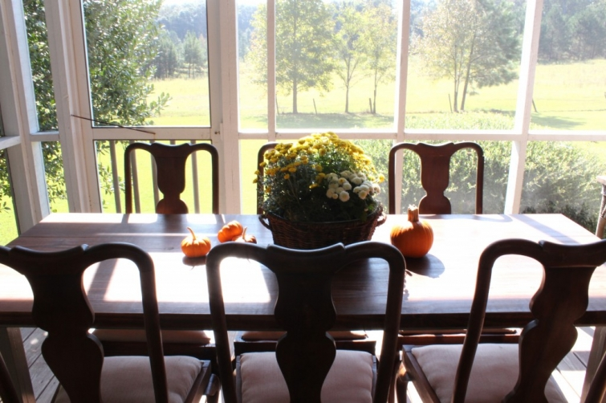
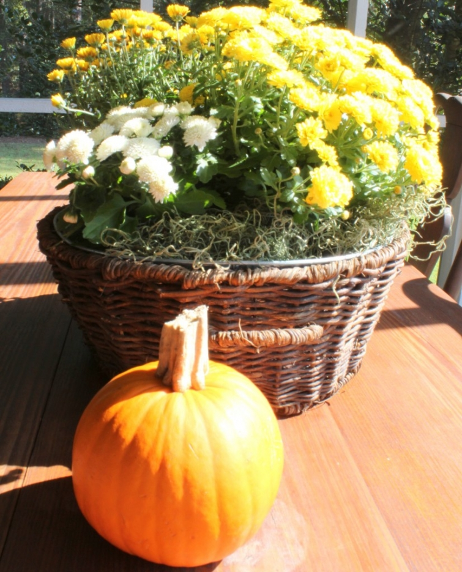
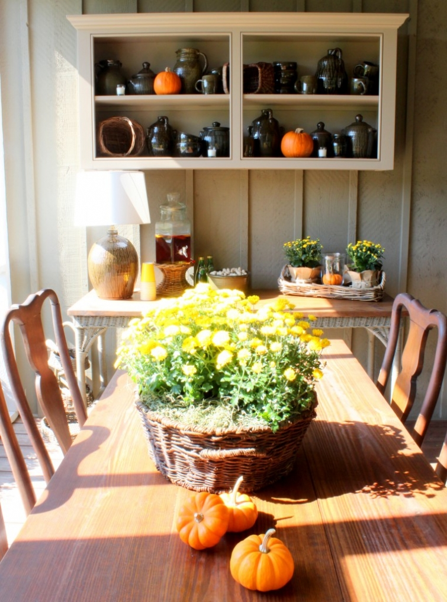

.png)
.PNG)
.PNG)
.PNG)
.PNG)
.PNG)
.JPG)
.JPG)
.PNG)
.PNG)



Do you remember way back in early July when I said that I was going to leave the back porch with all its red accents until after Valentines’ Day? Well…I didn’t quite make it until Valentine’s Day. Goodness, I didn’t even make it to Halloween! You see, this year with my overdose on yellow mums, it just had to go back to its yellow pillows. And naturally, I have to show it to you! I have tweaked it some, and there is a new little something out there to show you, too. Let’s begin with the table’s easy centerpiece – 3 pots of mums in a wicker serving bowl plus some baby pumpkins around it to keep it company. 🙂
Now take a look down the table, and you will see my new display cupboard my husband made. It is perfect for holding my pottery collection…although I am thinking a collection of garden pots and tools would look good here. We are still contemplating glass doors for the front of it. Which do you like better- glass or no doors?

Here is a little different view of it. I plan to make a linen skirt to go below the antique wicker table that it is hanging above. My goal is to get that done before Christmas (but I am not holding my breath on that.) 
And here are more pumpkins and mums for your viewing pleasure.
Now for a better look at the entire room for fall. I love the jute braid pillows from Pottery Barn, so I bought the “flan” colored ones to use on the sofa. Previously I had patterned yellow ones there, but I really like solids better. Maybe it is like one of my readers (yes, you Wanda) says, “The eye needs a place to rest.” I think solids allow our eyes a place to rest.
And yes, more pumpkins and mums for “fall-ness” on the end table.
Across from the sofa sits the big storage cabinet and 2 chairs. I added a large pumpkin up top to replace the live plant that has been there.
And finally, here is the little desk with its hanging mums.
That ends the tour of the back porch for now. Wouldn’t it be nice if you all could come for a visit out there? This is really the best time of year to enjoy the porch.
As soon as we wrap up Thanksgiving, I am sure I will be pulling out the red pillows, (and all the Christmas things 🙂 ) and yellow will hibernate for awhile. Let me know what you think about the doors for the hanging cabinet- glass or no doors at all?
I would love to hear from you!

I am linking up for the Fall Nesting Party at the Inspired Room.


.PNG)
Kelly!
I just found your blog and am in love with your porch! Your new cabinet is gorgeous and, in my opinion, does not need glass doors……all your pretty pottery shows so nicely the way it is now!
I am off to explore more of your beautiful blog! “Nice to meet you”!!!
Georgia
———————————————————————–
Georgia – Thank you so much for the compliments on the porch! Everyone else has agreed with you that no doors are needed on that cabinet, and my husband thanks all of you. Ha ha! I hope you find more that you like as your explore older posts. It is so nice to meet you too.
Kelly
I just love the way you decorate Kelly! I just stumbled upon your blog, and got some amazing inspiration. Your home is beautiful! I love the outside paint colors also. Would you be willing to share the names if those? Thanks so much! Misty
————————————————————————
Misty – You are too sweet, girl! I am glad your “stumbling” led you to my blog. 🙂 Our exterior is painted with a Martin Seynour paint – Pelham Gray. It really is a paint and not a stain, and I am not sure why they call it gray. It is more of a khaki tan-greenish-gray (real precise!) If I remember correctly, it is in the Williamsburg line of paints, but that could be wrong. We started out with an opaque stain the first time we painted the house but went with a paint this time. All of the trim is painted with a Benjamin Moore high gloss paint called Brilliant white. It is a real white white. I even used it on the kitchen cabinets! The dark ceiling of the porches is a Lowe’s Valspar paint called Lyndhurst Timber.
Enjoy your Sunday!
Kelly
Your porch is wonderful. I bet I could spend hours on end there just enjoying the view. Love the yellow throw on the chair….so warm…
———————————————————————
Andrea – The view is one of the best things about it. My son put on his coat so he could sit out there this evening and read.:) Thank you for the kind compliments!
Kelly
Love your rustic porch and all the great fall decor. I could sit out there all day.
———————————————————————-
Kim – Thank you Kim! Just come on over, and you can make yourself at home. 🙂
Kelly
I really like the porch done by Nancy Braithwaite. I like the simplicity and mix of materials. It inspired me to rearrange my own porch a little bit.
————————————————————————
Julianna – I wish the photography on that one by Nancy Braithwaite was better. It is difficult to me to see it, but I agree with you. It does look like “beautiful simplicity.” I am glad it gave you a little inspiration.:)
Kelly
The pumpkins splattered about the house look so sweet. I just stick them on the front step. I am not thinking!
——————————————————————-
Rebecca – They are everywhere here…outside, inside, you name it. Thanks for dropping by the blog to read and leave your nice comments!
Kelly
Wow, your porch is so spaciously spectacular…such a large, yet cozy space…so beautifully decorated and so functional…Just love it so much!!! Beautiful setting to enjoy!
——————————————————————–
Shirley – I can’t say thank you enough for all your wonderful compliments! You are too kind. We do enjoy the space of the back porch, and as I told Julia, one day I am going to have a stacked stone fireplace out there to make it even more usable and cozy.
Kelly
I would love to come for a visit & sip on some cider with you. We have an open porch on the back of our house. I mentioned to my husband something about putting a roof over. Then maybe I could have something a little more like yours. I love absolutely everything about your home & decorating style.
———————————————————————
Stephanie- Gosh! What a sweet thing to say about our home! Putting a roof over an open space is a great idea. I feel like our porch really expands our living space so much, and it is great for entertaining. Thanks for leaving your comments here today.
Kelly
What an inviting space. Love it.
————————————————————————
Dayle – Thank you for popping in to visit the blog today! I am happy you liked the porch. We enjoy our time out there. I jumped over to your blog and found your writing to be so beautiful. Please come back to visit again.
Kelly
Kelly, your porch is a dream!! Oh and to see deer and turkey, I’m in heaven! Love your cupboard, and your pottery collection looks so pretty on it. It looks great without doors and love your skirt idea. So fall pretty!!! Have a wonderful day, Robin
——————————————————————–
Robin – You are just so sweet. Wish you could come visit out on the porch and see those deer…but it is usually in the evening. Since the cows behind us have been sold, the deer don’t seem to come around quite as much. I wonder if there is a connection. Thank you for your always kind words.
Kelly
Kelly, your porch is beautiful. What I also love is the view you have. It looks like you back up to some beautiful property. Maybe you see some wildlife back there? I would absolutely love to come and sit and enjoy a visit on that porch with you. Wouldn’t that be fun!
——————————————————————–
Patty – The view is wonderful. What you are seeing in the photos is the field next to the house. (There are forests on the other 3 sides.) When the house was being built, we went ahead and put furniture on the porch so that we would have a place to rest while we worked on it. My father-in-law would frequently come out to the unfinished house just to sit and rock and enjoy that view. We see a lot of deer out here. There are apple trees on the fence line, and the deer come and eat the apples (even stand up on their back legs to reach them!!) I’ve seen wild turkeys twice. We just need to have a party out there and all you wonderful readers come for a visit! Thanks for visiting the blog today, Patty.
Kelly
Hi Kelly,
I’m thinking that you must live in the middle of a beautiful park! The view from your back porch is delightful. What you have done to decorate the porch is just perfect and yes, I totally agree with you (and Wanda) about the solid colours. About the cupboard – doors vs no doors… I love the way it looks now so I would have to say no doors would be my preference. Your idea of putting a linen skirt would add a lovely detail to that end of the porch… how about this – use a strip of velcro you could attach the skirt to and then you could change it depending on the season to match the pillows.
Thanks for a peek into your back porch 🙂
Cath
P.S. Tea with you in the back porch? Yes, please… I’ll pop over later this afternoon and bring some pumpkin muffins to share.
———————————————————————–
Cath – No park here. I am out in the middle of the country. I am liking these votes for “no doors” (and my husband – the builder- does too, since it means less work for him!) I like your idea of the Velcro skirt option. I was going to use tension rods inside the table frame…will ponder…along with Karen’s idea of leaving it unskirted. Come on over for tea. I made pumpkin muffins for lunch yesterday, and they are gone (thanks especially to one daughter who took a bunch back to college with her.) They are one of my favorites!
Kelly
Kelly,
The porch looks great dressed in it’s yellow accents for fall. By porch, do you mean it’s exposed to the weather or are those windows, not just screens? I like the new shelf your husband made without doors, that’s just me. It shows the pottery off better. I also like the wicker table without a skirt, you have other wicker in the room and I think it all ties nicely together. What a great space, I’ll be over for a cup of tea and a piece of your apple cake later. 🙂
Karen
————————————————————————–
Karen – It is a real porch, and those are screens. I vacuum the upholstery regularly, and it is all sprayed with a scotchguard fabric protector to help it when it rains. Thanks for your input on the cabinet door and skirt..your choices are the easiest to do! 🙂 You are more than welcome to come for tea, but the apple cake is long gone. I do have some brownies with Rolo candies in them that I made. Will that do?
Kelly
Wow – that’s one beautiful porch! And the potting shelf and littlw writing desk – it’s all so adorable!
———————————————————————
Sarah – Thanks so much for your compliments! It is my favorite room “in” the house.
Kelly
Me Tooo!
——————————————————————-
Minnie – Just go ahead and build you a porch on the back of your house. 🙂
Kelly
So pretty! I want a porch like this…
——————————————————————-
Lindsay – If you had a porch like this, you would have it so pretty with all the things from your new etsy shop. You need to just add one on to your house so you can accessorize it! Thank you for visiting the blog today and leaving your sweet comments!
Kelly
Simply beautiful !
————————————————————————
Wanda – Thank you for your compliment, and I am glad you liked it!
Kelly
thank you for featuring my favorite room in your house! i love all your fall touches and makes me want to get out on this rainy monday and buy some mums and pumpkins for my sunroom…which is totally in a big ol’ mess since my UNFINISHED headboard is in the middle of the room patiently waiting on my lazy self to finish it up….
xoxo,
judy
——————————————————————
Judy – I showed the porch just for you! So glad you liked it in all it fall-ness. I laughed out loud at your unfinished headboard comment. You are not lazy; you are just finding other things to do with your time. 🙂
Kelly
Yes, lovely is right! I love all your Fall touches! We’ve recently updated our home and after looking at your blog and several others, I find myself going from room to room thinking about what I could do/add in each. I thought I was done, but now, after seeing your home, there is so much more I could do! Thank you for sharing your home — it’s beautiful!
———————————————————————-
Genny- You are so sweet! Blogland is a curse sometimes…we think we are finished, and then we find more to do! Never a dull moment at least. I am so glad you dropped in to leave your kind words here today. Please come back again.
Kelly
I DO wish I could come relax on that porch with you! Lovely, as always.
——————————————————————–
Amanda- Thank you for the compliment. I wish you could come on over too! (Or I could head to your house and relax on your gorgeous porch.:))
Kelly